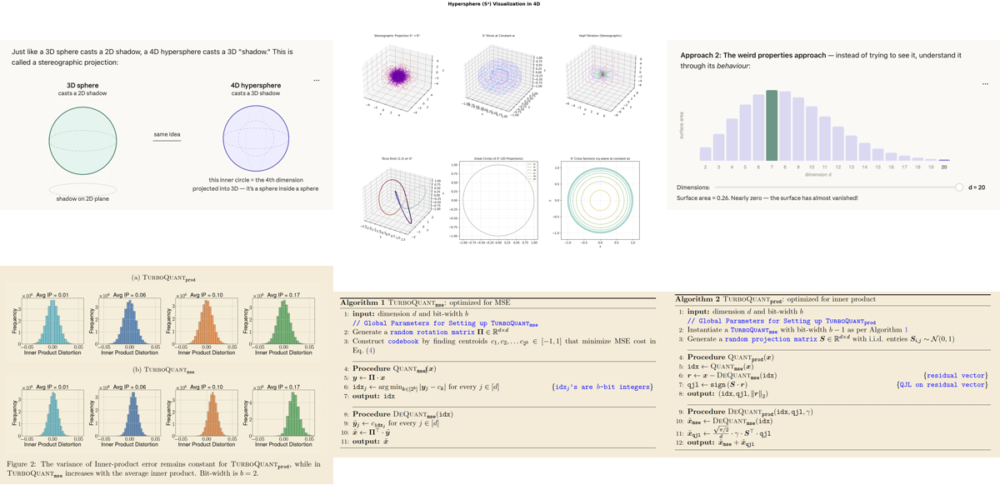

|
skr3178 Robotics researcher working on embodied AI, reinforcement learning, and humanoid robots. This page showcases my open-source robotics projects and contributions. |
{kind=link}
ResearchI work on robotics research, including humanoid robots, reinforcement learning, simulation environments, and embodied AI. Below are my open-source robotics projects. |

GitHub Repository
Tennis match analysis pipeline with ball tracking (TrackNet/TrackNetV4/WASB-SBDT), court detection, player pose estimation, and racket detection from broadcast video.

GitHub Repository
3D pose reconstruction of tennis players from monocular broadcast video. Lifts 2D keypoints to a 3D skeleton for biomechanics analysis.
GitHub Repository
An AI-powered job search and auto-application tool with a simple UI for browsing and applying to roles.

GitHub | PyPI
Online vector quantization with near-optimal distortion rate. 2-bit KV cache quantization (~8x memory reduction) for HuggingFace transformer inference, within ~2.7x of the Shannon limit.

GitHub Repository
Implementation of the Action100M video processing pipeline for generating hierarchical video action annotations. Uses V-JEPA 2 for temporal segmentation and Qwen3-VL for caption generation.

GitHub Repository
Autonomous agent framework that implements research papers from PDF to working code. 6-phase pipeline: paper extraction, contract definition, data proof, component implementation, integration, and benchmarking.

GitHub Repository
Recreation of the 3D reconstruction pipeline from the LingBot world model paper. Generates detailed 3D point clouds from video sequences using VGGT.

GitHub Repository
Digital twin of Unitree G1 humanoid robot in a 3D Gaussian Splatting scene. Browser-based split-screen viewer with keyboard control for humanoid locomotion in photorealistic environments.

GitHub Repository
Implementation of Copilot4D: Learning Unsupervised World Models for Autonomous Driving via Discrete Diffusion. A world model approach for self-driving vehicles.

GitHub Repository
Diffusion-based trajectory prediction using LiDAR data. Trained on KITTI dataset with encoder and diffusion model for autonomous driving trajectory forecasting.

GitHub Repository
Implementation of DreamerV4: Training Agents Inside of Scalable World Models. World model architecture for reinforcement learning with video tokenizer and dynamics prediction.

GitHub Repository
Implementation of Humanoid World Models: Open World Foundation Models for Humanoid Robotics. Training world models for humanoid robot control and simulation.

GitHub Repository
Implementation of Genie world model - a generative video model that learns latent actions from unlabeled video data. Includes video tokenizer, latent action model, and dynamics model.

GitHub Repository
Robotic piano playing simulation in NVIDIA Isaac Sim with dexterous hands. Features MIDI playback, collision handling, and reinforcement learning for piano performance.

GitHub Repository
Reinforcement learning for SO101 robotic arm in NVIDIA Isaac Lab. Custom SO101 stacking cubes task created from scratch with GPU-accelerated parallel environments for training manipulation policies.

GitHub Repository
Projects and exercises for learning ROS2 Navigation Stack (Nav2) using TurtleBot3 in Gazebo simulation. Covers SLAM, autonomous navigation, and the complete Nav2 stack implementation.

GitHub Repository
Fine-tune the model on YouTube videos that show first-person hand movements, extract motion data, refine it in Blender, and retarget it for specific hand URDF models.

GitHub Repository
Degrees of freedom analysis and comparison of the Berkeley Humanoid platform. Cost estimated at $4.9K.

GitHub Repository
A collection of gymnasium environments for Human-In-the-Loop (HIL) reinforcement learning, compatible with Hugging Face's LeRobot codebase.

GitHub Repository
The LeRobot framework along with the SVLA SO101 pick-and-place dataset for robot learning.

GitHub Repository
Fork of Physical Intelligence's OpenPI with flow matching for robot policy learning. Vision-language-action model with continuous action generation using conditional flow matching for high-frequency control.

GitHub Repository
Tools for converting MMD (MikuMikuDance) motions to robot armature format for Isaac Lab RL training. Includes motion extraction from Blender, inverse kinematics retargeting to robots like Unitree G1/H1.

GitHub Repository
Expressive robotic hand design. More dexterous configurations using cables and deported actuators in the forearm.

GitHub Repository
Code and environments for reinforcement learning of drone swarms using Unreal Engine 4 and Microsoft AirSim. Includes multi-agent RL implementations.


GitHub Repository
HumanoidBench: a simulated humanoid robot benchmark with 15 whole-body manipulation and 12 locomotion tasks, with code for environments and training.


GitHub Repository
Isaac Launchable offers a simplified approach to installing and using Isaac Lab and Isaac Sim.
Experience |
Mechanical Engineer | VSParticle, Delft, Netherlands | Aug 2024 – Apr 2025
|
Education |
M.S. Mechanical Engineering (Robotics Focus) | Northwestern University, Evanston, IL | 2019 – 2021
|
Publications & Patents |
|
|
Website template based on Jon Barron's website. |